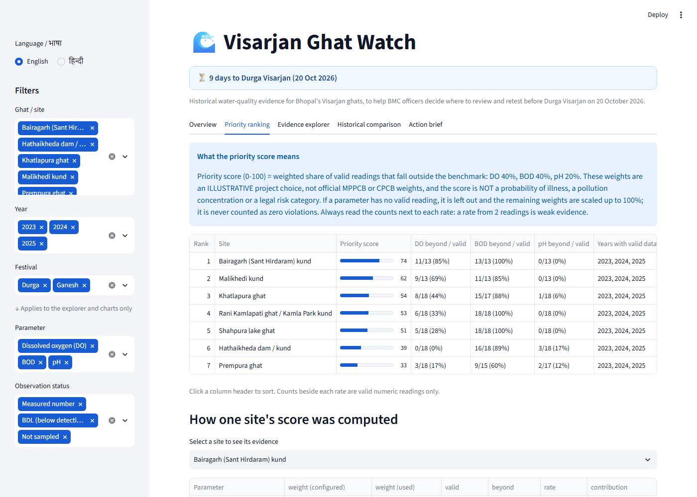
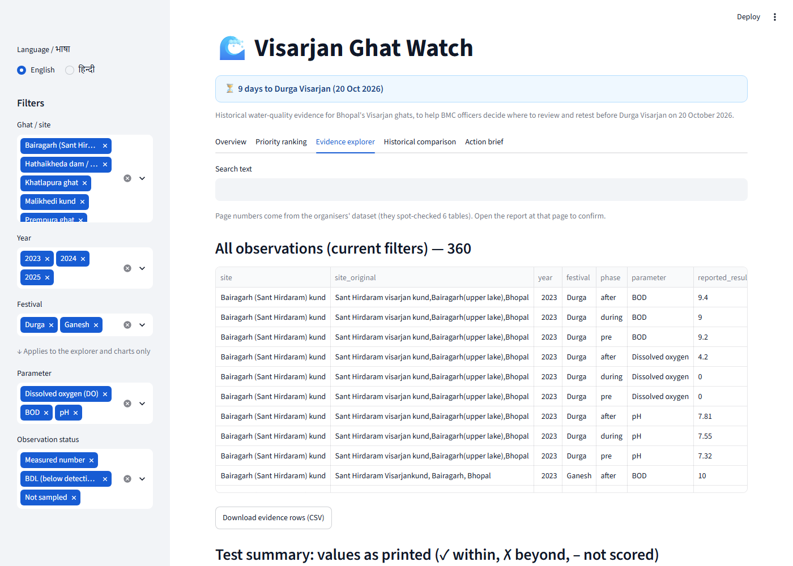
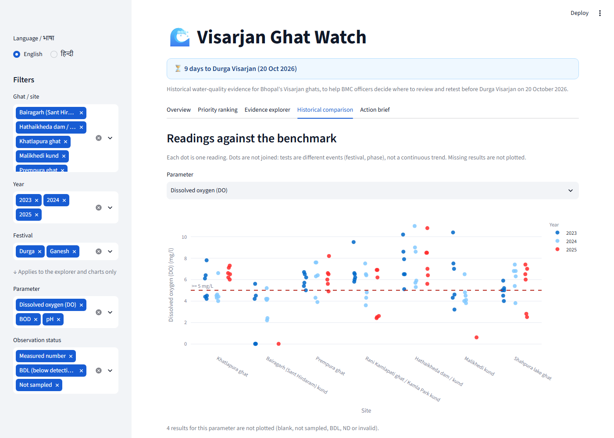
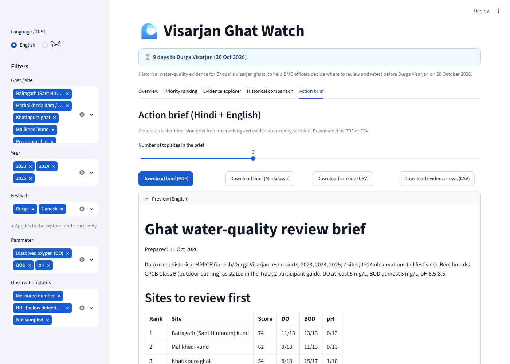

For BMC officers · Durga Visarjan, 20 Oct 2026
Know which Visarjan ghats to review first — and prove why.
Visarjan Ghat Watch turns three years of MPPCB water-test reports into a traceable priority list. Every ranking links back to the exact readings and the report page they came from.
Historical 2023–2025 data, a screening aid. Not live data, not an official BMC or MPPCB product.

- 7Bhopal ghats
- 1,524readings, 2023–2025
- 42 / 116DO readings below 5 mg/L
- 100 / 112BOD readings above 3 mg/L
- 40 / 40source-page groups verified
Features
Everything the dashboard does today
Eight working features, built around one rule: no number without a source, and no gap treated as clean.
-
Overview computed from the data
Summary cards for sites, observations, and DO, BOD and pH benchmark exceedances. Each exceedance shows its sample size, and a separate card counts results that cannot be scored.
How it works: every figure is calculated from the loaded records, never typed in, and responds to the sidebar filters.
Benefit: officers see the scale of the evidence before reading a single ranking.
7Ghat sites1,524Observations42DO below · 36% of 116100BOD above · 89% of 1126pH outside · 5% of 11517Cannot be scored / 360 -
Cross-check against the participant guide
The guide reports three headline figures. The app recalculates each from the records and shows both side by side.
How it works: the guide's numbers are stored as reported and never used as results; a match or mismatch is shown per figure.
Benefit: you can show an audience that the data and the guide agree.
Guide-reported figures versus recalculated figures Figure Guide Recalculated Match DO below 5 mg/L 42 of 116 42 of 116 ✓ BOD above 3 mg/L 100 of 112 100 of 112 ✓ Bairagarh DO = 0 4 times 4 times (2023, 2025) ✓ -
Transparent priority ranking
A sortable table ranks ghats by the weighted share of valid readings outside the benchmark (DO 40%, BOD 40%, pH 20%). Pick any site to see its weights, rates and contributions.
How it works: a parameter with no valid reading is dropped and the other weights are renormalised, never counted as zero. A site with no usable readings shows “Insufficient evidence — retest”, not a score.
Benefit: a defensible shortlist. The weights are illustrative, not official, and the score is not a health-risk measure.
-
Evidence explorer
Every observation with the original site name, the value exactly as printed, its qualifier, unit, source file and source page, plus a link to the report PDF. Search, filter, and download the rows as CSV.
How it works: selecting a site lists the exact rows behind its score and the rows that could not be scored. A missing page shows “Source page not verified”.
Benefit: any claim can be checked against the original report in seconds.

-
Honest handling of missing data
Blank and “not sampled” results are missing, not clean. BDL and ND are kept as separate qualifiers and never turned into zero. Units, unreadable text and impossible values are validated and flagged, never silently dropped.
How it works: each result gets a status; only measured numbers are scored. Nothing is imputed or averaged.
Benefit: the ranking can't be flattered by gaps in the reports.
- Measured number scored
- BDL kept, not zero
- ND kept, not BDL
- Not sampled missing ≠ clean
- Blank missing ≠ clean
- Invalid / unit mismatch flagged, excluded
-
Historical comparison
Interactive charts plot every valid reading by site and year against the benchmark line, with valid-versus-violating counts and a coverage table.
How it works: dots are not joined, because tests are separate events, not a continuous trend. Results that can't be plotted are counted in a caption.
Benefit: see at a glance which ghats keep falling short, and where data is thin.

-
Bilingual action brief
Generate a short decision brief in English and Hindi as PDF, Markdown or CSV: top sites, supporting readings with report citations, missing-data warnings and suggested follow-ups.
How it works: built from the same ranking and evidence the screen shows, with a bundled Devanagari font so Hindi renders correctly. The interface itself also switches between English and हिन्दी.
Benefit: a document an officer can hand over, with the screening-tool caveat built in.

-
Source-page verification and gap warnings
A script checks the cited pages against the three real MPPCB PDFs. The app also warns about missing test tables and uncertain site-name mappings.
How it works: all 40 site/year/festival/page groups were found on the cited page. This is a consistency check, not a digit-by-digit audit.
Benefit: known gaps are visible up front instead of discovered during the demo.
- Verified 40 of 40 table groups found on the cited PDF page
- Gap Bairagarh: no Durga 2025 test table in the data
- Gap Malikhedi: no Durga 2025 test table in the data
- Review Rani Kamlapati / Kamla Park: name mapping has medium confidence
Upcoming — not built yet
- AI-assisted summary Upcoming
An optional summary that only restates computed results. Not implemented; the app is fully deterministic today.
- Map view Upcoming
Needs verified ghat coordinates, which the data doesn't contain.
- In-app data upload Upcoming
New readings can be added today through a CSV and a config file; there is no upload screen yet.
How it works
From long PDFs to a shortlist, in six steps
Load the MPPCB data
1,524 readings from the 2023–2025 reports, as extracted by the hackathon organisers. Every row keeps its report file and page.
Validate and classify
Each result becomes measured, BDL, ND, not sampled, missing, or invalid. Units and implausible values are checked.
Compare with benchmarks
Measured DO, BOD and pH values are compared with the CPCB Class B bathing-water benchmarks stated in the guide.
Rank transparently
A weighted violation-rate score with counts beside every rate. Sites without usable readings are marked for retesting.
Trace the evidence
Open the exact rows behind any score, with the report page and a link to the PDF.
Download the brief
Get a bilingual PDF, Markdown or CSV to guide fresh sampling before 20 October.
Benefits
Built to be trusted, not just to look good
Traceable
Every number points to a report file and page.
Honest about gaps
Missing is never clean. Gaps and uncertain mappings are flagged.
Deterministic
The same data always gives the same ranking; ties break by name.
Bilingual
English and Hindi interface and brief, with correctly rendered Devanagari.
Runs anywhere
No API key, no internet needed, no paid services.
Tested
64 automated tests cover benchmarks, missing-data rules, ranking maths and exports.
About
A screening aid for a real deadline
Visarjan Ghat Watch was built for the Bhopal Impact Lab 2026 (Track 2). Durga Visarjan falls on 20 October 2026, and the MPPCB results from earlier years sit in 90–120 page PDFs that are hard to compare. The tool helps an officer decide where to look first.
It is a decision-support project on historical data. It has no live government data, makes no health claims, and is not an official BMC or MPPCB product. Official testing and municipal judgement decide.
FAQ
Common questions
Is this live water-quality data?
No. It uses MPPCB test results from 2023–2025. They may not reflect conditions on 20 October 2026, which is why the app recommends fresh sampling.
What does the priority score mean?
It is the weighted share of valid readings outside the benchmark (DO 40%, BOD 40%, pH 20%). The weights are an illustrative project choice, and the score is not a health risk, a concentration or a legal category.
How are missing, BDL and ND results treated?
Blank and “not sampled” results are missing, not clean. BDL and ND are kept as reported and never converted to zero or scored. A site with no usable readings is marked “Insufficient evidence — retest”.
Which benchmarks are used?
CPCB Class B (outdoor bathing) as stated in the participant guide: dissolved oxygen at least 5 mg/L, BOD at most 3 mg/L, pH 6.5–8.5. These are not limits for every water use.
Does it need an internet connection or an API key?
No. Everything runs locally and deterministically. An optional AI summary is listed as upcoming and is not part of the app.
Can I add more data?
Yes. Add a CSV with the same columns and map its report files in the config. See data/README.md in the repository. An upload screen is upcoming.
Review the evidence before 20 October
Open the dashboard, rank the ghats, and download a bilingual brief.